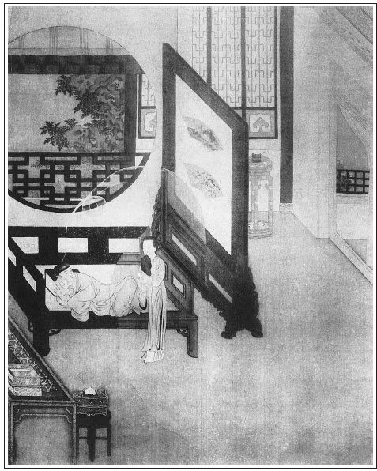

張回月娘掃雪，至此又寫賞雪。夫前雪為春前之雪，一層層熱了來。此回為臘底之雪，一層層冷了去也。因寫諸花，固用雪為起結。
瓶兒初來，月娘掃雪；瓶兒一死，西門賞雪：特特相映。忽插愛月，又為「踏雪訪」相映也。夫愛月必踏雪訪，蓋言冷將至也。雪月下無他花，惟待春梅矣。
接言黃四，蓋為後愛月家楔子也。愛月兒，又為王招宣林氏楔子也。林氏，又為金蓮故也。總是金蓮一人文字。
篇內借行酒令，明明點出掃雪前文。觀伯爵云「頭裡小雪，後來大雪」可見。
此回瓶兒之夢，非結瓶兒，蓋預報西門之死也。至何家托夢，方結瓶兒。
篇內寫金蓮戴金赤虎分心，蓋特為瓶兒初來一照；而「情感」一回後接云「打金滿池嬌九鳳甸兒」，蓋已為此回瓶兒夢中初醒之金蓮作地。其筆力之強健為何如？
伯爵生兒，特刺西門之心，又為孝哥作映也。
敘孟二舅，人知伏脈，接敘敬濟陪坐，乃所以伏脈也，人烏知之？至於問孟銳年紀，卻是為玉樓點睛。人又烏得知之？蓋言玉樓正當時，而非將殘之杏，為嫁衙內作地也。
篇末將玉皇廟、報恩寺、永福寺一總。夫玉皇廟，皆起手處也；永福寺，皆結果處也；至報恩寺，乃武大、子虛、瓶兒唸經之所。故於此一結之。是故報恩者，孝字也。惟孝可以化孽，故諸人燒靈，必用報恩寺，而結以孝可幻化，然則報恩寺，又是玉樓、孝哥二人發源結果之所也。
詞曰：
朔風天，瓊瑤地。凍色連波，波上寒煙砌。張夾「砌」字奇絕。山隱彤云云接水，衰草無情，想在彤雲內。張夾一路層層跌入，總為香魂二字取影也。
黯香魂，追苦意。夜夜除非，好夢留人睡。殘月高樓休獨倚，酒入愁腸，化作相思淚。
──右調《蘇幕遮》

話說西門慶歸後邊，辛苦的人，直睡至次日日高還未起來。有來興兒進來說：「搭彩匠外邊伺候，請問拆棚。」西門慶罵了來興兒幾句，說：「拆棚教他拆就是了，只顧問怎的！」繡眉無一毫要緊，卻妙。張夾如此拆棚亦必寫得精彩，無一懈筆。搭彩匠一面卸下席繩松條，送到對門房子裡堆放不題。玉簫進房說：「天氣好不陰的重。」西門慶令他向暖炕上取衣裳穿，要起來。月娘便說：「你昨日辛苦了一夜，天陰，大睡回兒也好。慌的老早爬起去做甚麼？就是今日不往衙門裡去也罷了。」西門慶道：「我不往衙門裡去，只怕翟親家那人來討書。」月娘道：「既是恁說，你起去，我去叫丫鬟熬下粥等你吃。」西門慶也不梳頭洗面，披著絨衣，戴著氈巾，逕走到花園裡書房中。
原來自從書僮去了，西門慶就委王經管花園書房，春鴻便收拾大廳前書房。張夾細。冬月間，西門慶只在藏春閣書房中坐。那裡燒下地爐暖炕，地平上又放著黃銅火盆，放下油單絹暖簾來。明間內擺著夾枝桃，各色菊花，清清瘦竹，翠翠幽蘭，張夾是冬裡景。裡面筆硯瓶梅，琴書瀟灑。西門慶進來，王經連忙向流金小篆炷爇龍涎。西門慶使王經：「你去叫來安兒請你應二爹去。」王經出來吩咐來安兒請去了。只見平安走來對王經說：「小周兒在外邊伺候。」張夾剃頭者復來，官哥安在哉？可知與山洞戲春嬌時特特反照。而下文月兒著鄭春一來便與桂姐明明對針，彼正炎熱，此則祁寒，轉眼有炎涼之異。總是此書其來脈真令粗心人摹頭不頭著也。王經走入書房對西門慶說了，西門慶叫進小周兒來，磕了頭，說道：「你來得好，且與我篦篦頭，捏捏身上。」因說：「你怎一向不來？」小周兒道：「小的見六娘沒了，忙，沒曾來。」西門慶於是坐在一張醉翁椅上，打開頭髮教他整理梳篦。只見來安兒請的應伯爵來了，頭戴氈帽，身穿綠絨襖子，腳穿一雙舊皂靴棕套，掀簾子進來唱喏。張夾總與山洞戲春嬌時對照。西門慶正篦頭，說道：「不消聲喏，請坐。」伯爵拉過一張椅子來，就著火盆坐下。西門慶道：「你今日如何這般打扮？」伯爵道：「你不知，外邊飄雪花兒哩，好不寒冷。昨日家去，雞也叫了，今日白爬不起來。不是大官兒去叫，我還睡哩。哥，你好漢，還起的早。若是我，成不的。」繡眉此等好漢，決不長久。張夾隨口即是奉承。西門慶道：「早是你看著，我怎得個心閒！自從發送他出去了，又亂著接黃太尉，唸經，直到如今。今日房下說：『你辛苦了，大睡回起去。』我又記掛著翟親家人來討回書，又看著拆棚，二十四日又要打發韓夥計和小價起身。喪事費勞了人家，親朋罷了，士大夫官員，你不上門謝謝孝，禮也過不去。」張旁二語勢利不堪。張夾將前後數事總題，五實一虛。伯爵道：「正是，我愁著哥謝孝這一節。少不的只摘撥謝幾家要緊的，胡亂也罷了。其餘相厚的，若會見，告過就是了。誰不知你府上事多，彼此心照罷。」
正說著，只見畫童兒拿了兩盞酥油白糖熬的牛奶子。張夾總為冷處寫照。伯爵取過一盞，拿在手內，見白瀲瀲鵝脂一般酥油飄浮在盞內，說道：「好東西，滾熱！」呷在口裡，香甜美味，那消氣力，幾口就喝沒了。西門慶直待篦了頭，又教小周兒替他取耳，把奶子放在桌上，只顧不吃。伯爵道：「哥且吃些不是？可惜放冷了。像你清晨吃恁一盞兒，倒也滋補身子。」西門慶道：「我且不吃，你吃了，停會我吃粥罷。」那伯爵得不的一聲，拿在手中，又一吸而盡。繡眉同一物，羨者涎垂而厭者欲嘔，饑飽使然耶？抑貧富之口異耶？悠然可思。西門慶取畢耳，又叫小周兒拿木滾子滾身上，行按摩導引之術。伯爵問道：「哥滾著身子，也通泰自在麼？」西門慶道：「不瞞你說，像我晚夕身上常發酸起來，腰背疼痛，不著這般按捏，通了不得！」張夾映死期，用筆總是草蛇灰線，由漸而入，切須學之。伯爵道：「你這胖大身子，日逐吃了這等厚味，豈無痰火！」西門慶道：「任後溪常說：『老先生雖故身體魁偉，而虛之太極。』送了我一罐兒百補延齡丹，說是林真人合與聖上吃的，張夾好引證。教我用人乳常清晨服。我這兩日心上亂，也還不曾吃。你們只說我身邊人多，終日有此事，自從他死了，誰有甚麼心緒理論此事！」繡旁到此事，雖知已前，亦要說謊。張夾總為死期一引。
正說著，只見韓道國進來，作揖坐下，說：「剛才各家都來會了，船已雇下，准在二十四日起身。」西門慶吩咐：「甘夥計攢下帳目，兌了銀子，明日打包。」因問：「兩邊鋪子裡賣下多少銀兩？」韓道國說：「共湊六千餘兩。」西門慶道：「兌二千兩一包，著崔本往湖州買綢子去。張夾記明二千。那四千兩，你與來保往松江販布，張夾記明四千。過年趕頭水船來。你每人先拿五兩銀子，家中收拾行李去。」韓道國道：「又一件：小人身從鄆王府，要正身上直，不納官錢如何處？」西門慶道：「怎的不納官錢？像來保一般也是鄆王差事，他每月只納三錢銀子。」韓道國道：「保官兒那個，虧了太師老爺那邊文書上注過去，便不敢纏擾。小人乃是祖役，還要勾當餘丁。」西門慶道：「既是如此，你寫個揭帖，我央任後溪到府中替你和王奉承說，把你名字註銷，常遠納官錢罷。張夾須知使道國亦在鄆王府官身，以便與來保捏攏一夥，暗中結親等事。今不為之開除，則將來拐財豈能遠遁哉？王府中亦來尋之矣，故此處順筆即為開除，良工苦心，誰其知之？你每月只委人打米就是了。」韓夥計作揖謝了。伯爵道：「哥，你替他處了這件事，他就去也放心。」張夾用伯爵口中點明。少頃，小周滾畢身上，西門慶往後邊梳頭去了，吩咐打發小周兒吃點心。
良久，西門慶出來，頭戴白絨忠靖冠，身披絨氅，賞了小週三錢銀子。又使王經：「請你溫師父來。」不一時，溫秀才峨冠博帶而至。敘禮已畢，左右放桌兒，拿粥來，伯爵與溫秀才上坐，西門慶關席，韓道國打橫。西門慶吩咐來安兒：「再取一盞粥、一雙筷兒，請姐夫來吃粥。」不一時，陳敬濟來到，頭戴孝巾，張夾細。身穿白綢道袍，張夾細。與伯爵等作揖，打橫坐下。須臾吃了粥，收下家火去，韓道國起身去了。西門慶因問溫秀才：「書寫了不曾？」溫秀才道：「學生已寫稿在此，與老先生看過，方可謄真。」一面袖中取出，遞與西門慶觀看。其書曰：
寓清河眷生西門慶端肅書張旁二字罵絕。復大碩德柱國雲峰老親丈大人先生台下：自從京邸邂逅，不覺違越光儀，倏忽半載。生不幸閨人不祿，特蒙親家遠致賻儀，兼領悔教，足見為我之深且厚也。感刻無任，而終身不能忘矣。但恐一時官守責成有所疏陋之處，企仰門牆有負薦拔耳，又賴在老爺鈞前常為錦覆。則生始終蒙恩之處，皆親家所賜也。今因便鴻謹候起居，不勝馳戀，伏惟照亮，不宣。外具揚州縐紗汗巾十方、色綾汗巾十方、揀金挑牙二十付、烏金酒鍾十個，少將遠意，希笑納。
西門慶看畢，即令陳敬濟書房內取出人事來，同溫秀才封了，將書謄寫錦箋，彌封停當，印了圖書。張夾細開，總為後文洩機作映。另外又封五兩白銀與下書人王玉，不在話下。
一回見雪下的大了，西門慶留下溫秀才在書房中賞雪。揩抹桌兒，拿上案酒來。只見有人在暖簾外探頭兒，西門慶問是誰，王經說：「是鄭春。」西門慶叫他進來。那鄭春手內拿著兩個盒兒，舉的高高的，跪在當面，上頭又擱著個小描金方盒兒，西門慶問是甚麼，鄭春道：「小的姐姐月姐，知道昨日爹與六娘唸經辛苦了，沒甚麼，送這兩盒兒茶食兒來，與爹賞人。」張夾與桂姐、銀兒作用不同，又是一樣迷魂陣。揭開，一盒果餡頂皮酥、一盒酥油泡螺兒。張夾特刺瓶兒。鄭春道：「此是月姐親手揀的。知道爹好吃此物，敬來孝順爹。」西門慶道：「昨日多謝你家送茶，今日你月姐費心又送這個來。」伯爵道：「好呀！拿過來，我正要嘗嘗！死了我一個女兒會揀泡螺兒，如今又是一個女兒會揀了。」張夾便說著，所以雲幫閒，亦有其才也。先捏了一個放在口內，又拈了一個遞與溫秀才，說道：「老先兒，你也嘗嘗。吃了牙老重生，抽胎換骨。眼見希奇物，勝活十年人。」繡眉分明贊泡螺，卻作戲弄溫秀才語出之，小人油嘴，故自不易。張夾涎臉處，亦趣。溫秀才呷在口內，入口而化，說道：「此物出於西域，非人間可有。沃肺融心，實上方之佳味。」西門慶又問：「那小盒兒內是甚麼？」鄭春悄悄跪在西門慶跟前，遞上盒兒，說：「此是月姐捎與爹的物事。」張夾又與桂姐銀兒不同。西門慶把盒子放在膝蓋兒上，揭開才待觀看，早被伯爵一手撾過去，打開是一方回紋錦同心方勝桃紅綾汗巾兒，裡面裹著一包親口嗑的瓜仁兒。伯爵把汗巾兒掠與西門慶，將瓜仁兩把喃在口裡都吃了。比及西門慶用手奪時，只剩下沒多些兒，繡眉伯爵雖太頑皮，然瓜仁入口亦只尋常，實不如搶去之有餘味。則謂頑皮也可，謂湊趣也可。張夾可知與山洞一戲，特特對針。明眼人自知。便罵道：「怪狗才，你害饞癆饞痞！留些兒與我見見兒，也是人心。」伯爵道：「我女兒送來，不孝順我，再孝順誰？我兒，你尋常吃的夠了。」繡旁安頓得妙。張夾與曼倩偷酒一樣風流。西門慶道：「溫先兒在此，我不好罵出來，你這狗才，忒不像模樣！」一面把汗巾收入袖中，吩咐王經把盒兒掇到後邊去。
不一時，杯盤羅列，篩上酒來。張夾是雪天。才吃了一巡酒，玳安兒來說：「李智、黃四關了銀子，送銀子來了。」西門慶問多少，玳安道：「他說一千兩，餘者再一限送來。」伯爵道：「你看這兩個天殺的，他連我也瞞了張夾便罵，妙。不對我說。嗔道他昨日你這裡唸經他也不來，原來往東平府關銀子去了。你今收了，也少要發銀子出去了。這兩個光棍，他攬的人家債多了，只怕往後後手不接。昨日，北邊徐內相發恨，要親往東平府自家抬銀子去。只怕他老牛箍嘴箍了去，卻不難為哥的本錢！」繡眉只一事不相聞，便轉口打破局。小人，小人！張夾便打破。西門慶道：「我不怕他。我不管甚麼徐內相李內相，好不好把他小廝提在監裡坐著，不怕他不與我銀子。」張夾又為伯爵後文結果處暗照。一面教陳敬濟：「你拿天平出去收兌了他的就是了。我不出去罷。」
良久，陳敬濟走來回話說：「銀子已兌足一千兩，交入後邊，大娘收了。黃四說，還要請爹出去說句話兒。」西門慶道：「你只說我陪著人坐著哩。左右他只要搗合同，教他過了二十四日來罷。」敬濟道：「不是。他說有樁事兒要央煩爹。」西門慶道：「甚麼事？等我出去。」一面走到廳上，那黃四磕頭起來，說：「銀子一千兩，姐夫收了。餘者下單我還。小人有一樁事兒央煩老爹。」說著磕在地下哭了。西門慶拉起來道：「端的有甚麼事，你說來。」黃四道：「小的外父孫清，搭了個夥計馮二，在東昌府販綿花。不想馮二有個兒子馮淮，不守本分，要便鎖了門出去宿娼。那日把綿花不見了兩大包，被小人丈人說了兩句，馮二將他兒子打了兩下。他兒子就和俺小舅子孫文相廝打起來，把孫文相牙打落了一個，他亦把頭磕傷。被客伙中解勸開了。不想他兒子到家，遲了半月，破傷風身死。張夾如何便傷風，明系打傷身死矣。他丈人是河西有名土豪白五，張夾黃四有丈人，馮二亦有丈人。白五唆千，黃四求情，閒閒寫來便使倚托外家，黃、白用事，世情皆出。綽號白千金，張夾白物千金，何事不成。專一與強盜做窩主，教唆馮二，具狀在巡按衙門朦朧告下來，批雷兵備老爹問。雷老爹又伺候皇船，不得閒，轉委本府童推官問。白家在童推官處使了錢，張夾白物兌銅，自是一類。教鄰見人供狀，說小人丈人在旁喝聲來。如今童推官行牌來提俺丈人。張夾因他丈人要俺丈人，妙。望乞老爹千萬垂憐，討封書對雷老爹說，寧可監幾日，抽上文書去，還見雷老爹問，就有生路了。他兩人廝打，委的不管小人丈人事，又系歇後身死，出於保辜限外。先是他父馮二打來，何必獨賴孫文相一人身上？」張夾可知一千兩，為此來還。西門慶看了說帖，寫著：「東昌府見監犯人孫清、孫文相，乞青目。」因說：「雷兵備前日在我這裡吃酒，我只會了一面，又不甚相熟，我怎好寫書與他？」黃四就跪下哭哭啼啼哀告說：「老爹若不可憐見，小的丈人子父兩個就都是死數了。如今隨孫文相出去罷了，只是分豁小人外父出來，就是老爹莫大之恩。小人外父今年六十歲，家下無人，冬寒時月再放在監裡，就死罷了。」西門慶沉吟良久，說：「也罷，我轉央鈔關錢老爹和他說說去張夾因錢轉與黃、白解事，寫來一笑。──與他是同年，都是壬辰進士。」黃四又磕下頭去，向袖中取出「一百石白米」帖兒遞與西門慶，腰裡就解兩封銀子來。張眉此回賞雪與前掃雪特對。前掃雪寫月娘全盛之時；此賞雪寫月娘將收。雪裡蟾光，其能不為雲遮乎？故用黃四求情一事，襯後文平安偷鉤無處求情相映。見今昔頓異，總是月娘文字也。西門慶不接，說道：「我那裡要你這行錢！」黃四道：「老爹不稀罕，謝錢老爹也是一般。」西門慶道：「不打緊，事成我買禮謝他。」
正說著，只見應伯爵從角門首出來，說：「哥，休替黃四哥說人情。他閒時不燒香，忙時抱佛腿。繡眉似戲而實非戲，此小人拿捏人賣弄手段處。張夾映出。昨日哥這裡唸經，連茶兒也不送，也不來走走兒，今日還來說人情！」張夾小人不快，便有許多挾制人處。那黃四便與伯爵唱喏，說道：「好二叔，你老人家殺人哩！繡旁語亦是慣家。我因這件事，整走了這半月，誰得閒來？昨日又去府裡領這銀子，今日一來交銀子，就央說此事，救俺丈人。老爹再三不肯收這禮物，還是不下顧小人。」伯爵看見一百兩雪花官銀放在面前，因問：「哥，你替他去說不說？」西門慶道：「我與雷兵備不熟，如今要轉央鈔關錢主政替他說去。到明日，我買分禮謝老錢就是了，又收他禮做甚麼？」伯爵道：「哥，你這等就不是了。難道他來說人情，哥你倒陪出禮去謝人？也無此道理。你不收，恰似嫌少的一般。你依我收下。雖你不稀罕，明日謝錢公也是一般。黃四哥在這裡聽著：看你外父和你小舅子造化，這一回求了書去，難得兩個都沒事出來。你老爹他恆是不稀罕你錢，你在院裡老實大大擺一席酒，請俺們耍一日就是了。」繡旁開口決不放鬆。張夾總是為嘴頭不落空處也。黃四道：「二叔，你老人家費心，小人擺酒不消說，還叫俺丈人買禮來，磕頭酬謝你老人家。張夾亦明說。不瞞說，我為他爺兒兩個這一場事，晝夜替他走跳，還尋不出個門路來。老爹再不可憐怎了！」伯爵道：「傻瓜，你摟著他女兒，你不替他上緊誰上緊？」繡旁語不趣不已。黃四道：「房下在家只是哭。」西門慶被伯爵說著，把禮帖收了，說禮物還令他拿回去。繡旁西門慶臨財往往有廉恥，有良心。黃四道：「你老人家沒見好大事，這般多計較！」就往外走。伯爵道：「你過來，我和你說：你書幾時要？」黃四道：「如今緊等著救命，張夾妙，不緊等著亦不來矣。望老爹今日寫了書，差下人，明早我使小兒同去走遭。不知差那位大官兒去，我會他會。」西門慶道：「我就替你寫書。」因叫過玳安來吩咐：「你明日就同黃大官一路去。」
那黃四見了玳安，辭西門慶出門。走到門首，問玳安要盛銀子的褡褳。玳安進入後邊，月娘房裡正與玉簫、小玉裁衣裳，見玳安站著等褡褳，玉簫道：「使著手，不得閒謄。教他明日來與他就是了。」玳安道：「黃四等緊著明日早起身東昌府去，不得來了，你謄謄與他罷。」月娘便說：「你拿與他就是了，只教人家等著。」玉簫道：「銀子還在床地平上掠著不是？」走到裡間，把銀子往床上只一倒，掠出褡褳來，說：「拿了去！怪囚根子，那個吃了他這條褡褳，只顧立叮螞蝗的要！」張夾總為後嬌兒盜財作因，見月娘不謹也。玳安道：「人家不要，那個好來取的！」於是拿了出去，走到儀門首，還抖出三兩一塊麻姑頭銀子來。繡眉貧者爭一錢不可得，而富家狠戾若此，作者其有感憤乎！張夾總為不謹處作引，以便後嬌兒盜財也。原來紙包破了，怎禁玉簫使性子那一倒，漏下一塊在褡褳底內。玳安道：「且喜得我拾個白財。」於是褪入袖中。繡眉今人愈富，愈不能有此。張夾寫出狼籍。到前邊遞與黃四，約會下明早起身。
且說西門慶回到書房中，即時教溫秀才修了書，付與玳安不題。一面覷那門外下雪，張夾一語收了。紛紛揚揚，猶如風飄柳絮，亂舞梨花相似。西門慶另打開一壇雙料麻姑酒，教春鴻用布甑篩上來，鄭春在旁彈箏低唱，西門慶令他唱一套「柳底風微」。張夾春梅將放矣。正唱著，只見琴童進來說：「韓大叔教小的拿了這個帖兒與爹瞧。」西門慶看了，吩咐：「你就拿往門外任醫官家，替他說說去。央他明日到府中承奉處替他說說，註銷差事。」琴童道：「今日晚了，小的明早去罷。」西門慶道：「明早去也罷。」不一時，來安兒用方盒拿了八碗下飯，又是兩大盤玫瑰鵝油燙面蒸餅，連陳敬濟共四人吃了。西門慶教王經盒盤兒拿兩碗下飯、一盤點心與鄭春吃，又賞了他兩大鐘酒。鄭春跪稟：「小的吃不的。」伯爵道：「傻孩子，冷呵呵的，你爹賞你不吃。你哥他怎的吃來？」鄭春道：「小的哥吃的，小的本吃不的。」伯爵道：「你只吃一鍾罷，那一鍾我教王經替你吃罷。」王經說道：「二爹，小的也吃不的。」伯爵道：「你這傻孩兒，你就替他吃些兒也罷。休說一個大分上，自古長者賜，少者不敢辭。」一面站起來說：「我好歹教你吃這一杯。」那王經捏著鼻子，一吸而飲。西門慶道：「怪狗才，小行貨子他吃不的，只恁奈何他！」張夾映愛。還剩下半盞，應伯爵教春鴻替他吃了，就要令他上來唱南曲。西門慶道：「咱每和溫老先兒行個令，飲酒之時教他唱便有趣。」繡眉形容教書先生賣弄學問處，直添頰上三毛。於是教王經取過骰盆兒，「就是溫老先兒先起。」溫秀才道：「學生豈敢僭，還從應老翁來。」因問：「老翁尊號？」伯爵道：「在下號南坡。」張夾伯爵號自此方出，夫白嚼入肚，非南坡不能消此，故寫作一笑。西門慶戲道：「老先生你不知，他孤老多，到晚夕桶子掇出來，不敢在左近倒，恐怕街坊人罵，教丫頭直掇到大南首縣倉牆底下那裡潑去，因起號叫做『南潑』。」張夾又明點趣意。溫秀才笑道：「此『坡』字不同。那『潑』字乃點水邊之『發』，這『坡』字卻是『土』字旁邊著個『皮』字。」繡眉語語不脫頭巾氣。西門慶道：「老先兒倒猜得著，他娘子鎮日著皮子纏著哩。」繡旁就「皮」字作謔語，趣甚。張夾是山東聲口。溫秀才笑道：「豈有此說？」伯爵道：「葵軒，你不知道，他自來有些快傷叔人家。」溫秀才道：「自古言不褻不笑。」伯爵道：「老先兒，誤了咱每行令，只顧和他說甚麼，他快屎口傷人！張夾南坡自道也。你就在手，不勞謙遜。」溫秀才道：「擲出幾點，不拘詩詞歌賦，要個『雪』字，就照依點數兒上。說過來，飲一小杯；說不過來，吃一大盞。」溫秀才擲了個幺點，說道：「學生有了：雪殘鸂鶒亦多時。」張夾映私傳書信。推過去，該應伯爵行，擲出個五點來。伯爵想了半日，想不起來，說：「逼我老人家命也！」良久，說道：「可怎的也有了。」說道：「雪裡梅花雪裡開。──好不好？」張夾春梅欲動。溫秀才道：「南老說差了，犯了兩個『雪』字，頭上多了一個『雪』字。」伯爵道：「頭上只小雪，後來下大雪來了。」張夾映後文卻是映掃雪前文，將此回文字真與掃雪一回對針一攏，可知此書上半部全是照下，下半部全是映上也。西門慶道：「這狗才，單管胡說。」教王經斟上大鐘，春鴻拍手唱南曲《駐馬聽》：
寒夜無茶，走向前村覓店家。這雪輕飄僧捨，密灑歌樓，遙阻歸槎。江邊乘興探梅花，張夾周備府等候久矣。庭中歡賞燒銀蠟。一望無涯，有似灞橋柳絮滿天飛下。張夾此詞單為春梅。
伯爵才待拿起酒來吃，只見來安兒後邊拿了幾碟果食，內有一碟酥油泡螺，又一碟黑黑的團兒，用桔葉裹著。張夾是伯爵眼中。伯爵拈將起來，聞著噴鼻香，吃到口猶如飴蜜，細甜美味，不知甚物。西門慶道：「你猜？」伯爵道：「莫非是糖肥皂？」西門慶笑道：「糖肥皂那有這等好吃。」伯爵道：「待要說是梅酥丸，裡面又有核兒。」張旁是金哥。西門慶道：「狗才過來，我說與你罷，你做夢也夢不著。是昨日小價杭州船上捎來，名喚做衣梅。張夾可知春梅消息。都是各樣藥料和蜜煉製過，滾在楊梅上，外用薄荷、桔葉包裹，才有這般美味。每日清晨噙一枚在口內，生津補肺，去惡味，煞痰火，解酒克食，比梅酥丸更妙。」伯爵道：「你不說，我怎的曉得。」因說：「溫老先兒，咱再吃個兒。」教王經：「拿張紙兒來，我包兩丸兒，到家捎與你二娘吃。」張夾又是歸遺細君遺風。又拿起泡螺兒來問鄭春：「這泡螺兒果然是你家月姐親手揀的？」鄭春跪下說：「二爹，莫不小的敢說謊？不知月姐費了多少心，只揀了這幾個兒來孝順爹。」伯爵道：「可也虧他，上頭紋溜，就像螺螄兒一般，粉紅、純白兩樣兒。」張夾點出。西門慶道：「我兒，此物不免使我傷心。惟有死了的六娘他會揀，他沒了，張夾已為夢因。如今家中誰會弄他！」伯爵道：「我頭裡不說的，我愁甚麼？死了一個女兒會揀泡螺兒孝順我，如今又鑽出個女兒會揀了。偏你也會尋，尋的都是妙人兒。」繡眉先說過一遍，無人會意，至此又自宣一遍，一句趣語不肯埋沒，人往往有此。張夾奉承處，自足迷人。西門慶笑的兩眼沒縫兒，趕著伯爵打，說：「你這狗才，單管只胡說。」溫秀才道：「二位老先生可謂厚之至極。」繡眉寫得人人有此。伯爵道：「老先兒你不知，他是你小侄人家。」西門慶道：「我是他家二十年舊孤老。」陳敬濟見二人犯言，就起身走了。那溫秀才只是掩口而笑。繡旁畫。
須臾，伯爵飲過大鐘，次該西門慶擲骰兒。於是擲出個七點來，想了半日說：「我說《香羅帶》上一句唱：『東君去意切，張夾是死期將近。梨花似雪。』」張夾是夢因。伯爵道：「你說差了，此在第九個字上了，且吃一大鐘。」於是流沿兒斟了一銀衢花鐘，放在西門慶面前，教春鴻唱，說道：「我的兒，你『肚子裡裹棗核解板兒──能有幾句』！」春鴻又拍手唱了一個。看看飲酒至昏，掌燭上來。西門慶飲過，伯爵道：「姐夫不在，溫老先生你還該完令。」溫秀才拿起骰兒，擲出個幺點，想了想，見壁上掛著一幅吊屏，泥金書一聯：「風飄弱柳平橋晚；雪點寒梅小院春。」張夾總是為春梅吸動，又是點明雪意。就說了末後一句。伯爵道：「不算，不算，不是你心上發出來的。該吃一大鐘。」春鴻斟上，那溫秀才不勝酒力，坐在椅上只顧打盹，起來告辭。伯爵還要留他，西門慶道：「罷罷！老先兒他斯文人，吃不的。」令畫童兒：「你好好送你溫師父那邊歇去。」溫秀才得不的一聲，作別去了。伯爵道：「今日葵軒不濟，吃了多少酒兒？就醉了。」於是又飲夠多時，伯爵起身說：「地下滑，我也酒夠了。」因說：「哥，明日你早教玳安替他下書去。」張夾心事。西門慶道：「你不見我交與他書，明日早去了。」伯爵掀開簾子，見天陰地下滑，旋要了個燈籠，和鄭春一路去。西門慶又與了鄭春五錢銀子，盒內回了一罐衣梅，捎與他姐姐鄭月兒吃。臨出門，西門慶因戲伯爵：「你哥兒兩個好好去。」繡旁雅謔。伯爵道：「你多說話。父子上山，各人努力。好不好，我如今就和鄭月兒那小淫婦兒答話去。」說著，琴童送出門去了。
西門慶看收了傢伙，扶著來安兒，打燈籠入角門，從潘金蓮門首過，見角門關著，悄悄就往李瓶兒房裡來。彈了彈門，繡眉丟甜桃，尋苦李，淫心何邪如此？想亦妾不如婢，婢不如偷之意。張夾妙，便不似向日揚揚直入，寫來令人一笑。繡春開了門，來安就出去了。西門慶進入明間，見李瓶兒影，就問：「供養了羹飯不曾？」如意兒就出來應道：「剛才我和姐供養了。」西門慶椅上坐了，迎春拿茶來吃了。西門慶令他解衣帶，如意兒就知他在這房裡歇，連忙收拾床鋪，用湯婆熨的被窩暖洞洞的，張夾是無人睡者。打發他歇下。繡春把角門關了，都在明間地平上支著板凳，打鋪睡下。西門慶要茶吃，兩個已知科范，連忙攛掇奶子進去和他睡。老婆脫衣服鑽入被窩內，西門慶乘酒興服了藥，那話上使了托子，老婆仰臥炕上，架起腿來，極力鼓搗，沒高低搧磞，搧磞的老婆舌尖冰冷，張夾上。淫水溢下，張夾下。口中呼「達達」不絕。張夾上聲。夜靜時分，其聲遠聆數室。繡旁忽作文語，妙。張夾下聲。西門慶見老婆身上如綿瓜子相似，用一雙胳膊摟著他，令他蹲下身子，在被窩內咂𩫻𩫵，老婆無不曲體承奉。西門慶說：「我兒，你原來身體皮肉也和你娘一般白淨，我摟著你，就如和他睡一般。繡眉頗有愛屋及烏之意。張夾又是夢緣。你須用心伏侍我，我看顧你。」老婆道：「爹沒的說，將天比地，折殺奴婢！奴婢男子漢已沒了，爹不嫌醜陋，早晚只看奴婢一眼兒就夠了。」西門慶便問：「你年紀多少？」老婆道：「我今年屬兔的，三十一歲了。」西門慶道：「你原來小我一歲。」見他會說話兒，枕上又好風月，心下甚喜。早晨起來，老婆伏侍拿鞋襪，打髮梳洗，極盡慇勤，把迎春、繡春打靠後。張夾一句使打狗關門時一哭。又問西門慶討蔥白綢子：「做披襖子，與娘穿孝。」西門慶一一許他。就教小廝鋪子裡拿三疋蔥白綢來：「你每一家裁一件。」瞞著月娘，背地銀錢、衣服、首飾，甚麼不與他！
次日，潘金蓮就打聽得知，走到後邊對月娘說：「大姐姐，你不說他幾句！賊沒廉恥貨，昨日悄悄鑽到那邊房裡，與老婆歇了一夜。餓眼見瓜皮，甚麼行貨子，好的歹的攬搭下。不明不暗，到明日弄出個孩子來算誰的？張夾心事。又像來旺兒媳婦子，張夾又是心事，可知此日兩件皆快意事也。往後教他上頭上臉，甚麼張致！」月娘道：「你們只要栽派教我說，他要了死了的媳婦子，你每背地都做好人兒，只把我合在缸底下。我如今又做傻子哩！你每說只顧和他說，我是不管你這閒帳。」張夾已恨金蓮矣。金蓮見月娘這般說，一聲兒不言語，走回房去了。
西門慶早起見天晴了，打發玳安往錢主事家下書去了。往衙門回來，平安兒來稟：「翟爹人來討書。」西門慶打發書與他，因問那人：「你怎的昨日不來取？」那人說：「小的又往巡撫侯爺那裡下書來，繡眉寫私門之廣，不獨一提刑也。耽擱了兩日。」說畢，領書出門。西門慶吃了飯就過對門房子裡，看著兌銀、打包、寫書帳。二十四日燒紙，打發韓夥計、崔本並後生榮海、胡秀五人起身往南邊去。張夾送財出門矣。寫了一封書捎與苗小湖，張夾便有號，人情可歎。就謝他重禮。
看看過了二十五六，西門慶謝畢孝，一日早晨，在上房吃了飯坐的。月娘便說：「這出月初一日，是喬親家長姐生日，張夾傷心一哭。咱也還買份禮兒送了去。常言先親後不改，莫非咱家孩兒沒了，就斷禮不送了？」西門慶道：「怎的不送！」於是吩咐來興買四盒禮，又是一套妝花緞子衣服、兩方銷金汗巾、一盒花翠。寫帖兒，叫王經送了去。這西門慶吩咐畢，就往花園藏春閣書房中坐的。只見玳安下了書回來回話，說：「錢老爹見了爹的帖子，隨即寫書差了一吏，同小的和黃四兒子到東昌府兵備道下與雷老爹張夾有錢何所不到。。雷老爹旋行牌問童推官催文書，連犯人提上去從新問理。連他家兒子孫文相都開出來，只追了十兩燒埋錢，問了個不應罪名，杖七十，罰贖。復又到鈔關上回了錢老爹話，討了回帖，才來了。」西門慶見玳安中用，心中大喜。張旁又出玳安。拆開回帖觀看，原來雷兵備回錢主事帖子都在裡面。上寫道：
來諭悉已處分，但馮二已曾責子在先，何況與孫文相忿毆，彼此俱傷，歇後身死，又在保辜限外，問之抵命，難以平允。量追燒埋錢十兩給與馮二，相應發落。謹此回覆。
下書：「年侍生雷啟元再拜。」
西門慶看了歡喜，因問：「黃四舅子在那裡？」玳安道：「他出來都往家去了。明日同黃四來與爹磕頭。黃四丈人與了小的一兩銀子。」西門慶吩咐置鞋腳穿，玳安磕頭而出。張旁照應月娘文中，即緊接瓶兒，又是官哥、孝哥相照處。西門慶就𢱉在床炕上眠著了。王經在桌上小篆內炷了香，悄悄出來了。良久，忽聽有人掀的簾兒響，只見李瓶兒驀地進來，身穿糝紫衫、白絹裙，亂挽烏雲，黃懨懨面容，張夾是耶非耶？寫來恰是。向床前叫道：「我的哥哥，你在這裡睡哩，張旁接死別時一語。奴來見你一面。我被那廝告了一狀，把我監在獄中，血水淋漓，與穢污在一處，整受了這些時苦。昨日蒙你堂上說了人情，繡旁黃真人之功。減我三等之罪。那廝再三不肯，發恨還要告了來拿你。張夾既有人情，可減他人之罪，又焉能拿他？寫得恍忽朦朧。我待要不來對你說，誠恐你早晚暗遭毒手。繡眉瓶兒之情，死後方深。我今尋安身之處去也，你須防範他。沒事少要在外吃夜酒，往那去，早早來家。張旁證明死於王六兒家。千萬牢記奴言，休要忘了！」說畢，二人抱頭而哭。西門慶便問：「姐姐，你往那去？張夾喚醒愚人。對我說。」李瓶兒頓脫，撒手卻是南柯一夢。西門慶從睡夢中直哭醒來，看見簾影射入，正當日午，由不的心中痛切。
正是：
花落土埋香不見，鏡空鸞影夢初醒。
有詩為證：
殘雪初晴照紙窗，地爐灰燼冷侵床。
個中邂逅相思夢，風撲梅花斗帳香。
不想早晨送了喬親家禮，喬大戶娘子使了喬通來送請帖兒，請月娘眾姊妹。小廝說：「爹在書房中睡哩。」都不敢來問。月娘在後邊管待喬通，張夾瓶兒安在？潘金蓮說：「拿帖兒，等我問他去。」於是驀地推開書房門，見西門慶𢱉著，他一屁股就坐在旁邊，說：「我的兒，獨自個自言自語，在這裡做甚麼？嗔道不見你，原來在這裡好睡也！」一面說話，一面看著西門慶，因問：「你的眼怎生揉的恁紅紅的？」繡旁一眼便到。張夾語語見血。西門慶道：「想是我控著頭睡來。」金蓮道：「到只象哭的一般。」繡旁一語便著。張夾語語見血。西門慶道：「怪奴才，我平白怎的哭？」金蓮道：「只怕你一時想起甚心上人兒來是的。」繡眉金蓮心眼俱慧，開口便著人痛癢，無論諷笑，雖毒罵，亦勝於不痛不癢，而一味奉承者也。張夾語語見血。西門慶道：「沒的胡說，有甚心上人、心下人？」金蓮道：「李瓶兒是心上的，奶子是心下的，俺們是心外的人，入不上數。」張夾語語見血。西門慶道：「怪小淫婦兒，又六說白道起來。」因問：「我和你說正經話──前日李大姐裝槨，你每替他穿了甚麼衣服在身底下來？」金蓮道：「你問怎的？」張夾妙問。西門慶道：「不怎的，我問聲兒。」張夾妙答。金蓮道：「你問必有緣故。上面穿兩套遍地金緞子衣服，底下是白綾襖、黃綢裙，貼身是紫綾小襖、白絹裙、大紅小衣。」西門慶點了點頭兒。張夾妙景。金蓮道：「我做獸醫二十年，猜不著驢肚裡病？你不想他，問他怎的？」西門慶道：「我才方夢見他來。」繡旁忍不住。金蓮道：「夢是心頭想，噴涕鼻子癢。繡旁輕輕一語抹過。饒他死了，你還這等念他。像俺每都是可不著你心的人，到明日死了，苦惱也沒那人想念！」張夾雖是妒語，又明透後文。西門慶向前一手摟過他脖子來，就親個嘴，說：「怪小油嘴，你有這些賊嘴賊舌的。」金蓮道：「我的兒，老娘猜不著你那黃貓黑尾的心兒！」兩個又咂了一回舌頭，自覺甜唾溶心，脂滿香唇，身邊蘭麝襲人。西門慶於是淫心輒起，摟他在懷裡。他便仰靠梳背，露出那話來，叫婦人品簫。婦人真個低垂粉頭，吞吐裹沒，往來鳴咂有聲。西門慶見他頭上戴金赤虎分心，張夾瓶兒之物也，至此徑入瓶兒進門，奇絕。香雲上圍著翠梅花鈿兒，後鬢上珠翹錯落，興不可遏。繡眉以金蓮之貌，而猶若以殊翹翠鈿增嬌，可見笑女簪花妝飾之不可少也。張夾又補梅花珠翹。正做到美處，忽見來安兒隔簾說：「應二爹來了。」西門慶道：「請進來。」慌的婦人沒口子叫：「來安兒賊囚，且不要叫他進來，等我出去著。」來安兒道：「進來了，在小院內。」婦人道：「還不去教他躲躲兒！」那來安兒走去，說：「二爹且閃閃兒，有人在屋裡。」這伯爵便走到松牆旁邊，看雪培竹子。張夾又映雪晴。王經掀著軟簾，只聽裙子響，金蓮一溜煙後邊走了。正是：
雪隱鷺鷥飛始見，柳藏鸚鵡語方知。
伯爵進來，見西門慶，唱喏坐下。西門慶道：「你連日怎的不來？」伯爵道：「哥，惱的我要不的在這裡。」西門慶問道：「又怎的惱？你告我說。」伯爵道：「緊自家中沒錢，昨日俺房下那個，平白又桶出個孩兒來。白日裡還好撾撓，半夜三更，房下又七痛八病。少不得扒起來收拾草紙被褥，叫老娘去。打緊應保又被俺家兄使了往莊子上馱草去了。百忙撾不著個人，我自家打燈籠叫了巷口鄧老娘來。及至進門，養下來了。」西門慶問：「養個甚麼？」伯爵道：「養了個小廝。」張夾刺入西門心中。西門慶罵道：「傻狗才，生了兒子倒不好，如何反惱？是春花兒那奴才生的？」張旁春花有秋實矣，葡萄架能不空乎！伯爵笑道：「是你春姨。」西門慶道：「那賊狗掇腿的奴才，誰教你要他來？叫叫老娘還抱怨！」伯爵道：「哥，你不知，冬寒時月，比不的你們有錢的人家，又有偌大前程，生個兒子錦上添花，便喜歡。張夾刺入西門心中。俺們連自家還多著個影兒哩，要他做甚麼！家中一窩子人口要吃穿，巴劫的魂也沒了。應保逐日該操當他的差事去了，家兄那裡是不管的。大小女便打發出去了，天理在頭上，多虧了哥你。繡旁先以感激動之。眼見的這第二個孩兒又大了，張旁又是伏敬濟說親。交年便是十三歲。張夾未曾嫁女，又早生兒，人生百年向平願，未有不在鬼門關上，可歎！昨日媒人來討帖兒。我說：『早哩，你且去著。』緊自焦的魂也沒了，猛可半夜又鑽出這個業障來。那黑天摸地，那裡活變錢去？房下見我抱怨，沒奈何，把他一根銀挖兒與了老娘去了。繡旁又以苦衷動之。明日洗三，嚷的人家知道了，到滿月拿甚麼使？到那日我也不在家，信信拖拖到那寺院裡且住幾日去罷。」繡眉有子者往往為此言，甚真；而無子者必以為矯，必也有子者忽而失其子，無子者忽而多其子，而後知其言之為真為矯也。西門慶笑道：「你去了，好了和尚來趕熱被窩兒。你這狗才，到底佔小便益兒。」又笑了一回，那應伯爵故意把嘴谷都著，繡旁又以愁容動之。不做聲。繡眉小人善騙人，伎倆大約不出此三者。張夾一路白描，曲盡借債人心事。西門慶道：「我的兒，不要惱，你用多少銀子，對我說，等我與你處。」伯爵道：「有甚多少？」西門慶道：「也夠你攪纏是的。到其間不夠了，又拿衣服當去。」伯爵道：「哥若肯下顧，二十兩銀子就夠了，我寫個符兒在此。張夾袖中禪詔，豈臨時可得！費煩的哥多了，不好開口的，張夾自作轉語。也不敢填數兒，隨哥尊意便了。」西門慶也不接他文約，說：「沒的扯淡，朋友家，什麼符兒！」正說著，只見來安兒拿茶進來。西門慶叫小廝：「你放下盞兒，喚王經來。」不一時，王經來到。西門慶吩咐：「你往後邊對你大娘說，我裡間床背閣上，有前日巡按宋老爹擺酒兩封銀子，拿一封來。」王經應諾，不多時拿了銀子來。西門慶就遞與應伯爵，說：「這封五十兩，你都拿了使去。繡眉西門慶不獨交結烏紗帽、紅繡鞋，而冷親戚、窮朋友無不周濟，亦可謂有財而會使者矣。原封未動，你打開看看。」伯爵道：「忒多了。」西門慶道：「多的你收著，眼下你二令愛不大了？你可也替他做些鞋腳衣裳，到滿月也好看。」張夾又為葛翠屏嫁時作伏。伯爵道：「哥說的是。」將銀子拆開，都是兩司各府傾就分資，三兩一錠，松紋足色，滿心歡喜，連忙打恭致謝，說道：「哥的盛情，誰肯！真個不收符兒？」西門慶道：「傻孩兒，誰和你一般計較？左右我是你老爺老娘家，不然你但有事就來纏我？這孩子也不是你的孩子，自是咱兩個分養的。實和你說，過了滿月，把春花兒那奴才叫了來，且答應我些時兒，只當利錢不算罷。」張夾寫貪色者無一釵一裙不垂於心，真有道逢曲車口流涎之趣。伯爵道：「你春姨這兩日瘦的像你娘那樣哩！」兩個戲了一回，伯爵因問：「黃四丈人那事怎樣了？」西門慶說：「錢龍野書到，雷兵備旋行牌提了犯人上去從新問理，把孫文相父子兩個都開出來，只認了十兩燒埋錢。」伯爵道：「造化他了。他就點著燈兒，那裡尋這人情去！你不受他的，幹不受他的。雖然你不稀罕，留送錢大人也好。別要饒了他，教他好歹擺一席大酒，裡邊請俺們坐一坐。你不說，等我和他說。饒了他小舅一個死罪，當別的小可事兒！」這裡說話不題。
且說月娘在上房，只見孟玉樓走來，說他兄弟孟銳：「不久又起身往川廣販雜貨去。今來辭辭他爹，在我屋裡坐著哩。張夾又為嚴州伏線，總是此書，一看破，自瓶兒進門日便都是冰冷之筆，令人不耐看也。他在那裡？姐姐使個小廝對他說聲兒。」月娘道：「他在花園書房和應二坐著哩。又說請他爹哩，頭裡潘六姐到請的好！喬通送帖兒來，等著討個話兒，到明日咱們好去不去。我便把喬通留下，打發喫茶，長等短等不見來，熬的喬通也去了。半日，只見他從前邊走將來，教我問他：『你對他說了不曾？』他沒的話回，只噦了一聲：『我就忘了。』繡旁畫。帖子還袖在袖子裡。原來是恁個沒尾巴行貨子！不知前頭幹甚麼營生，那半日才進來，恰好還不曾說。吃我訌了兩句，往前去了。」張夾補寫法。少頃，來安進來，月娘使他請西門慶，說孟二舅來了。西門慶便起身，留伯爵：「你休去了，我就來。」走到後邊，月娘先把喬家送帖來請說了。西門慶說：「那日只你一人去罷。熱孝在身，莫不一家子都出來！」繡旁語語不忘瓶兒。張夾可笑。月娘說：「他孟二舅來辭辭你，一兩日就起身往川廣去。在三姐屋裡坐著哩。」又問：「頭裡你要那封銀子與誰？」張夾月娘亦狠，無微不算。西門慶道：「應二哥房裡春花兒，昨晚生了個兒子，問我借幾兩銀子使。告我說，他第二個女兒又大，愁的要不的。」月娘道：「好，好。他恁大年紀，也才見這個孩子，應二嫂不知怎的喜歡哩！繡眉以己度人，月娘心好，此其一斑。張夾直刺西門。到明日，咱也少不的送些粥米兒與他。」西門慶道：「這個不消說。到滿月，不要饒花子，奈何他好歹發帖兒，請你們往他家走走去，就瞧瞧春花兒怎麼模樣。」繡旁只管提，何故？張夾好色人，直有此心事。月娘笑道：「左右和你家一般樣兒，也有鼻兒也有眼兒，莫不差別些兒！」一面使來安請孟二舅來。
不一時，孟玉樓同他兄弟來拜見。敘禮已畢，西門慶陪他敘了回話，讓至前邊書房內與伯爵相見。吩咐小廝看菜兒，放桌兒篩酒上來，三人飲酒。西門慶教再取雙鍾箸：「對門請溫師父陪你二舅坐。」來安不一時回說：「溫師父不在，望倪師父去了。」繡旁伏脈，冷甚。張夾前已伏線，今又明點。西門慶說：「請你姐夫來坐坐。」良久，陳敬濟來，與二舅見了禮，繡旁又伏一案。打橫坐下。張夾必令敬濟陪，可知。西門慶問：「二舅幾時起身，去多少時？」孟銳道：「出月初二日准起身。定不的年歲，張旁為敬濟地步。還到荊州買紙，川廣販香蠟，著緊一二年也不止。販畢貨就來家了。此去從河南、陝西、漢州去，回來打水路從峽江、荊州那條路來，往回七八千里地。」伯爵問：「二舅貴庚多少？」孟銳道：「在下虛度二十六歲。」伯爵道：「虧你年小小的，曉的這許多江湖道路，似俺們虛老了，只在家裡坐著。」繡眉奉承慣，隨處便插兩句。須臾添換上來，杯盤羅列，孟二舅吃至日西時分，告辭去了。
西門慶送了回來，還和伯爵吃了一回。只見買了兩座庫來，西門慶委付陳敬濟裝庫。問月娘尋出李瓶兒兩套錦衣，攪金銀錢紙裝在庫內。因向伯爵說：「今日是他六七，張旁補出。不唸經，燒座庫兒。」伯爵道：「好快光陰，嫂子又早沒了個半月了。」西門慶道：「這出月初五日是他斷七，少不的替他念個經兒。」伯爵道：「這遭哥念佛經罷了。」繡旁偏奏得著。西門慶道：「大房下說，他在時，因生小兒，許了些《血盆經懺》，許下家中走的兩個女僧做首座，請幾眾尼僧，替他禮拜幾卷懺兒罷了。」說畢，伯爵見天晚，說道：「我去罷。只怕你與嫂子燒紙。」又深深打恭說：「蒙哥厚情，死生難忘！」西門慶道：「難忘不難忘，我兒，你休推夢裡睡哩！你眾娘到滿月那日，買禮都要去哩。」伯爵道：「又買禮做甚？我就頭著地，好歹請眾嫂子到寒家光降光降。」西門慶道：「到那日，好歹把春花兒那奴才收拾起來，牽了來我瞧瞧。」繡眉提春花凡四五遍，不論有意無意、是真是戲，而一片好淫貪念，已可想見。伯爵道：「你春姨他說來，有了兒子，不用著你了。」張夾明說孝哥。西門慶道：「不要慌，我見了那奴才和他答話。」伯爵笑的去了。
西門慶令小廝收了傢伙，走到李瓶兒房裡。陳敬濟和玳安已把庫裝封停當。那日玉皇廟、永福寺、報恩寺都送疏來。張夾一齊結入。西門慶看著迎春擺設羹飯完備，下出匾食來，點上香燭，使繡春請了吳月娘眾人來。西門慶與李瓶兒燒了紙，抬出庫去，教敬濟看著，大門首焚化。正是：
芳魂料不隨灰死，再結來生未了緣。
文回
一
文禹門云：西門慶之與李氏，可謂義重情深乎？試觀瓶兒死未及月，即在其屋與如意苟合，贊奶子一語，雖提及六娘，固儼然以愛瓶兒之愛愛如意矣。是李氏之寵，已移於如意矣，情雲乎哉？瓶兒之死，可謂得其時也。玳安之告傅夥計，真深知西門慶者。昔人有雲，種瓜得瓜，種豆得豆，種荊棘得刺。此等人縱慷慨好施，而欲人之感恩戴德也，豈可得乎？應伯爵者，固巳窺其隱矣。
二
文禹門又云：觀此一回，可見予言之不謬。目錄曰「賞雪」，玉簫說：「好不陰得重」，伯爵道：「飄雪花兒哩」，是釀雪將雪尚來成雪也。亦如西門慶，晚夕身上常發酸，起來腰背疼痛，是尋死將死尚未便死也。此時及早回頭，或可挽回一、二，多活兩年，乃自負結交官府，竟為黃四說情矣。人命所關，不問事之虛實，但聽一面之詞，便出說帖，恐地下有含冤之鬼，法外有漏網之凶，是誰之過歟？百金不受而收，此即枉法贓也。借地與人，賠錢待客，全為此等用處。
時衰運敗，鬼乃登門入室，李瓶兒之來，明明告以將死，不可尋死也。下文又以伯爵生子歆動之，尚可曰：我躬不閱，遑恤我後乎？五十兩之施，難救百兩之受，處處警以防死，而事事總是討死。而況月兒引之於前，六兒誘之於後，不知如意兒已獨實受其惠矣。何必再看下文，西門慶死機，不已躍躍於紙上乎？此處之得意處，殆無非迴光返照雲。吾故曰：不是興旺，只覺淒涼耳。
按：前評寫於光緒五年（1879）五月十七日。後評寫於光緒六年（1880）三月十五日。光緒八年（1882）九月十五日又閱一遍，並作附記：
姬人夜嗽，使我不得安眠。早起行香，雲濃雨細，道台因病，停止衙參。回署辰初，諸人均尚高臥。看完此本，細數前批，不作人云亦云，卻是有點心思。使我志遂買山，正可以以此作消閒也。